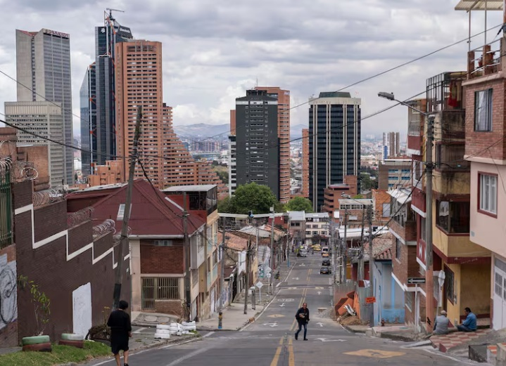
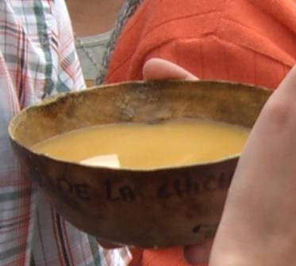

La Perseverancia: Primer barrio obrero de Bogotá (1912)
Nacido el 7 de Marzo de 1912 en las faldas de los cerros centrales, La Perseverancia surgió de la tierra misma para convertirse en el primer barrio obrero de Bogotá.
Modelado con la arcilla de la vida de sus gentes, sus primeras casas fueron construidas con adobe. Desde su fundación, entrelazó la historia de familias humildes con grandes empresas, como la Cervecería Alemana Bavaria.
Es un pueblo en el corazón de la ciudad que, a golpe de lucha y orgullo, ha logrado resistir las embestidas del 'progreso urbano', defendiendo su derecho a existir. Esta es la historia de la constancia y sacrificio que transformó peñascos en calles de colores.
Nuestros cimientos son de adobe y memoria, no de inversión. ¡Aquí no se vende la raíz, se defiende!
Manifiesto de la Comunidad
Profundidad Histórica: 3 Documentales sobre el Patrimonio
Párrafo 1: La gentrificación no es solo un fenómeno económico; es una fractura social que arranca las raíces de un barrio. Aquí analizamos cómo el patrimonio inmaterial se desvanece cuando la vivienda se convierte en un producto de lujo. La historia documentada sirve de escudo legal, un arma en el litigio contra la especulación.

Leyenda de la foto clave.
Párrafo 2: El desafío es mantener la cohesión comunitaria en medio del asedio. Los encuentros vecinales y los talleres de memoria son ahora cruciales. El patrimonio vive en la gente que lo habita. El movimiento vecinal ha optado por estrategias innovadoras, utilizando la documentación histórica como herramienta legal para proteger los espacios.
"La cultura no es un producto que se vende, es una vida que se comparte."
Párrafo 3: Finalmente, la revista busca ser un puente entre la historia y la acción. Cada artículo es un llamado a entender que la defensa del patrimonio es la defensa de la identidad. Este es el cierre del artículo principal, que termina de llenar las dos columnas.
Voces de la Comunidad: 10 Historias de Emprendimiento
Darlen Yoana Pardo - Yoal Natural
Productos: Masato, Galletas, Aromáticas de frutas
¿Cuál es la historia detrás de tu emprendimiento? ¿Cómo surgió la idea; qué te motivó a llevarla a cabo?
Mi emprendimiento nace por la pandemia y la necesidad de tener ingresos.
¿Cómo se refleja la cultura y la identidad de tu comunidad en tu emprendimiento? ¿Qué elementos del territorio has incorporado en tu producto o servicio?
Mi producto es el acompañamiento ideal a la tradición cultural del territorio para los más pequeños.
¿Qué significa para ti tu emprendimiento? ¿Cómo lo utilizas para conectar con tu comunidad?
La necesidad de superación y de obtener ingresos para sostenerme en el tiempo y poder conectarme con las familias a través de los gustos por las galletas sobre todo con las niñas/os.
¿Desde la memoria cultural qué nos puedes contar?
El desarrollo de mis productos me movió hacia el Masato que es una bebida tradicional que se asemeja un poco a la chicha que es la bebida por excelencia del territorio.
Yudi Medina - Comida Típica Yudi
Productos: Huesos de marrano, pelanga
¿Cuál es la historia detrás de tu emprendimiento? ¿Cómo surgió la idea; qué te motivó a llevarla a cabo?
La historia de mi emprendimiento empieza porque siempre me ha gustado trabajar con comidas típicas y es algo que heredé de mi familia. Al conocer mis capacidades y la herencia familiar, la gente me empezó a pedir que cocinara para ellos.
¿Cómo se refleja la cultura y la identidad de tu comunidad en tu emprendimiento? ¿Qué elementos del territorio has incorporado en tu producto o servicio?
Este barrio siempre ha sido culturalmente del gusto por la comida típica: huesos de marrano, pelanga, gallina, fritanga y las sopas. Al ser así nos hemos unido a la tradición, siempre nos ha funcionado y hemos tenido buena acogida.
¿Qué significa para ti tu emprendimiento? ¿Cómo lo utilizas para conectar con tu comunidad?
Una fuente de ingresos para mi familia y para mí; cuando hay eventos, feria de emprendimientos, siempre trabajo con la comunidad.
¿Desde la memoria cultural qué nos puedes contar?
Los años que llevo viviendo en este barrio siempre he visto que se caracteriza por la cultura y la tradición.
Martha Patricia Pineda - Confecciones Martina
Productos: Muñecos de navidad, tapabocas, gorros quirúrgicos, cojines, lencería, confección
¿Cuál es la historia detrás de tu emprendimiento? ¿Cómo surgió la idea; qué te motivó a llevarla a cabo?
Deriva de la familia Rincón que fue tejedora. Mi madre Ana Margarita conocía muy bien este arte y lo practicaba con mucha sabiduría y enseñó a sus hijos. Surge cuando realizo un curso de modistería en un externado al norte de Bogotá. Cuando salgo del mismo, no tenía las herramientas ni equipos para ejecutar el emprendimiento; antes de la pandemia logro un ahorro que no contaba con él y eso sirvió para comprar mi primera máquina de coser.
¿Cómo se refleja la cultura y la identidad de tu comunidad en tu emprendimiento? ¿Qué elementos del territorio has incorporado en tu producto o servicio?
Gracias a estos eventos culturales mi emprendimiento tiene la oportunidad de vincularse con la comunidad y me puedo dar a conocer con los distintos grupos y entes de la alcaldía; así como conectarse con otros emprendimientos del barrio. La Perseverancia es una comunidad que se destaca por sus aportes culturales o son los elementos que resaltan en el territorio además es propicio para integrar mis productos como muñecos de navidad, tapabocas, gorros quirúrgicos, cojines, lencería todo para confección y otros.
¿Qué significa para ti tu emprendimiento? ¿Cómo lo utilizas para conectar con tu comunidad?
La oportunidad de resaltar y dar a conocer mis habilidades y destrezas, de colocar en mi entorno todo lo aprendido por mi madre, de dar a conocer un arte que viene de mis ancestros. Vender un producto no solo me genera una satisfacción económica sino la alegría de saber que mis ancestros aún están vivos y mis productos su reflejo.
¿Desde la memoria cultural qué nos puedes contar?
Que La Perseverancia es un barrio netamente cultural desde muy niña he visto el tratamiento que nos dieron en la infancia, en la adolescencia, en los colegios, en las actividades culturales que se realizan, como deportivas, musicales, el bazar de la chicha, los carros esferados así también las actividades artísticas, gastronómicas y todo un emporio de riqueza que resalta nuestro gentilicio.
Esmeralda García Ramírez - Sabores Artesanales "El Caminante"
Productos: Postres y repostería venezolana
¿Cuál es la historia detrás de tu emprendimiento? ¿Cómo surgió la idea; qué te motivó a llevarla a cabo?
El emprendimiento nace por una necesidad económica, como un nuevo modo de vida para sobrevivir, derivado de la situación que afectó mi país. Junto con mi esposo nos vimos migrando a Colombia como una mejor opción de vida. El emprendimiento nace con la idea de mostrar y de ofertar nuestros productos principalmente nuestros postres por tener una fórmula venezolana en cada línea, en ese sentido dar a conocer la repostería de mi país de origen, esto nos motivó a ser parte del mercado.
¿Cómo se refleja la cultura y la identidad de tu comunidad en tu emprendimiento? ¿Qué elementos del territorio has incorporado en tu producto o servicio?
Se refleja en cada actividad que se realiza en el barrio que nos permite involucrarnos; los elementos del territorio que he involucrado han sido varios: Festival de la chicha, los eventos deportivos, el festival de la salsa también las actividades y/o convocatorias de la alcaldía local.
¿Qué significa para ti tu emprendimiento? ¿Cómo lo utilizas para conectar con tu comunidad?
Siento que ha sido una idea que surgió por una necesidad económica, la misma ayudó a demostrar nuestro potencial en el mundo de la repostería y ha permitido desarrollar otros productos especialmente venezolanos, lo cual tiene un gran significado por la cultura de otro país que se puede compartir y dar a conocer. Para conectar lo utilizo de distintas formas o vías que puedan darnos a conocer, como esta oportunidad que nos brinda Barrios Vivos, también de forma permanente en nuestro punto de venta.
¿Desde la memoria cultural qué nos puedes contar?
Particularmente por ser migrante no teníamos conocimiento de la historia cultural del barrio. A medida que nos hemos ido involucrando consideramos que (Barrios Vivos) como los demás eventos culturales son una oportunidad para resaltar a los emprendedores y darle vigorosidad de revivir un evento que estaba dormido como son la competencia de los carros esferados y que hoy estamos ayudando a darle vida con los distintos actores del barrio.
Odalis M. Ramos - Postres Manía
Productos: Tortas de vainilla y chocolate, postres, bocados dulces y salados, tortas personalizadas
¿Cuál es la historia detrás de tu emprendimiento? ¿Cómo surgió la idea; qué te motivó a llevarla a cabo?
Mi emprendimiento nació a raíz de un cáncer que le detectaron a mi madre hace 2 años y tenía la necesidad de generar ingresos independientemente para dedicarle tiempo a ella y mis hijos. La idea nace del don que tiene mi madre en la cocina y ella me dio a conocer las recetas de la torta de vainilla y chocolate.
¿Cómo se refleja la cultura y la identidad de tu comunidad en tu emprendimiento? ¿Qué elementos del territorio has incorporado en tu producto o servicio?
Mi emprendimiento refleja la gente de La Perseverancia por su lucha y constancia por salir adelante y con mis manos llenas de esfuerzo y dedicación mantener la salud de mi madre estable y la crianza de mis hijos. Incorporé postres y bocados acompañante ideal de la gastronomía cultural de La Perseverancia en sus almuerzos comidas.
¿Qué significa para ti tu emprendimiento? ¿Cómo lo utilizas para conectar con tu comunidad?
Mi emprendimiento es mi pasión y motivación de trabajar para mí y tener tiempo de calidad para dedicarle a mis hijos y la manera de conectar es ofrecerles las tortas personalizadas para celebrar sus fechas importantes al igual que los pasabocas salados y dulces.
¿Desde la memoria cultural qué nos puedes contar?
El barrio La Perseverancia fue fundado en el siglo XX simbolizado por un barrio obrero, trabajador y solidario con tradiciones muy arraigadas de la chicha, el tejo y el Gaitanismo.
Patricia Suarez - Delicias Pavilu
Productos: Fresas con chocolate, merengones, cheesecakes, postres de limón
¿Cuál es la historia detrás de tu emprendimiento? ¿Cómo surgió la idea; qué te motivó a llevarla a cabo?
Mi historia surgió en la pandemia, pues yo antes vendía fresas con chocolate en bazares, ferias y en el barrio. Después de la pandemia empezamos a incrementar productos como merengones, cheesecakes, postres de limón.
¿Cómo se refleja la cultura y la identidad de tu comunidad en tu emprendimiento? ¿Qué elementos del territorio has incorporado en tu producto o servicio?
Es un emprendimiento que empezó para la gente del barrio y trabajando en varios eventos.
¿Qué significa para ti tu emprendimiento? ¿Cómo lo utilizas para conectar con tu comunidad?
Una manera de subsistir y es una motivación, es una forma de empleo y lo utilizo para conectar llevándole a todos los vecinos el voz a voz además mostrándolo por todos lados, las redes sociales por ejemplo.
¿Desde la memoria cultural qué nos puedes contar?
Mis postres son de familia y para la familia, son postres de la cultura colombiana, son tradicionales y los elaboramos con ingredientes que todo el mundo conoce.
Myriam Consuelo Garay - Guarapo De Piña Konny
Productos: Guarapo de piña

¿Cuál es la historia detrás de tu emprendimiento? ¿Cómo surgió la idea; qué te motivó a llevarla a cabo?
El estar sola, y sin comida, estando enseñada a movilizarme con mis manualidades y venta de ropa. Fue difícil, pero me dejó una gran enseñanza la pandemia a ser proactiva. Empoderarme de mí misma. La adversidad, estar pasando por una situación muy difícil, y no debía quedarme en lamentos.
¿Cómo se refleja la cultura y la identidad de tu comunidad en tu emprendimiento? ¿Qué elementos del territorio has incorporado en tu producto o servicio?
La cultura aquí en La Perseverancia es la chicha, alrededor de esta bebida ancestral, se organizan y realizan muchos eventos, en honor a su tradición y memoria. La totuma, la manera de tomar la bebida descomplicadamente, el paso a paso de la misma de mano en mano y de boca en boca. El guarapo, que elaboro no es competencia aquí en La Perseverancia.
Ángela Suarez T. - The Last Store
Productos: Tejidos en crochet y 2 agujas
¿Cuál es la historia detrás de tu emprendimiento? ¿Cómo surgió la idea; qué te motivó a llevarla a cabo?
Siempre me gustó tejer, lo hago desde los 14 años. A medida que pasó el tiempo fui capacitándome y lo que tejía le comenzó a gustar a la gente y me animé a seguir tejiendo. Tomé la decisión de formar mi emprendimiento, y genero ingresos.
¿Cómo se refleja la cultura y la identidad de tu comunidad en tu emprendimiento? ¿Qué elementos del territorio has incorporado en tu producto o servicio?
Mi emprendimiento es un relajante, es una forma de interactuar con la gente.
¿Qué significa para ti tu emprendimiento? ¿Cómo lo utilizas para conectar con tu comunidad?
Participo activamente en eventos, bazares y comparto mi conocimiento con la comunidad.
¿Desde la memoria cultural qué nos puedes contar?
El tejido es una tradición de hace décadas donde se mezclaba lo rústico, el color, la moda y de esta forma quise continuar con esta labor que me apasiona.
Jhostin Alexander Moreno Pineda - Sublimaciones Galáctico
Productos: Diseño en pocillos, gorras, platos, camisetas
¿Cuál es la historia detrás de tu emprendimiento? ¿Cómo surgió la idea; qué te motivó a llevarla a cabo?
Participé en un curso para personas con discapacidad, de sublimación, donde aprendí a diseñar pocillos, gorras, platos, camisetas, entre otros. Esto fue posible porque me donaron el equipo de trabajo. La motivación surge por las clases donde participé y que me estimularon a generar la idea de crear un emprendimiento para desarrollar lo aprendido.
¿Cómo se refleja la cultura y la identidad de tu comunidad en tu emprendimiento? ¿Qué elementos del territorio has incorporado en tu producto o servicio?
Barrios Vivos es una oportunidad que me brinda la alcaldía para demostrar e integrar la cultura del barrio con mi emprendimiento, ya que apenas mi idea de negocio tiene seis meses de haberse puesto en marcha.
¿Qué significa para ti tu emprendimiento? ¿Cómo lo utilizas para conectar con tu comunidad?
Significa dar a conocer mi idea de negocio, porque demuestro mis habilidades y destrezas, que me ayudan a fortalecer mis sueños, ya que por mi condición no había tenido una oportunidad de este tipo. Haciendo promociones en las redes sociales, como Facebook, WhatsApp e Instagram, el voz a voz.
¿Desde la memoria cultural qué nos puedes contar?
El barrio La Perseverancia se destaca por realizar diversas actividades culturales, como el festival de La Chicha, de la Salsa, eventos deportivos, de teatro, entre otros, que nos invitan a mantener la cultura viva de nuestro barrio. Barrios Vivos es un evento que ayuda a rescatar tradiciones ya conocidas, que se quedaron como inactivas; pero, que hoy resurgen para darle protagonismo al barrio.
¿Cuál es la historia detrás de tu emprendimiento? ¿Cómo surgió la idea; qué te motivó a llevarla a cabo?
Fue una idea colectiva de todos los integrantes de La Gallera Internacional por crear una identidad a través de la marca.
¿Cómo se refleja la cultura y la identidad de tu comunidad en tu emprendimiento? ¿Qué elementos del territorio has incorporado en tu producto o servicio?
La Gallera Internacional es un colectivo de artistas de rap no sólo de Bogotá sino de muchos lugares y al diseñar y crear ropa y accesorios y vender nuestra propia música se ve más que reflejada nuestra identidad y nuestro aporte a la cultura del hip hop no solo local sino también nacional.
¿Qué significa para ti tu emprendimiento? ¿Cómo lo utilizas para conectar con tu comunidad?
Es la manera de llevar identidad de marca a través de la ropa y los accesorios además la venta de nuestra música. Al llevar a todas partes la identidad de La Gallera con nuestras prendas.
¿Desde la memoria cultural qué nos puedes contar?
Puedo decirte que es un colectivo de artistas de rap de Colombia y el mundo y llevamos a través del emprendimiento identidad y amor por la cultura hip hop en más de 15 años de trabajo de cada uno de los artistas pertenecientes a este colectivo.
Invitación:
¡La Tradición Rueda de Nuevo!
En el corazón de La Perseverancia, la estrategia Barrios Vivos 2025 está a punto de desatar una explosión de creatividad, tradición y adrenalina. Este año, el barrio se convierte en el epicentro de una competencia de bólidos que no solo celebra la velocidad, sino el ingenio comunitario. La jornada promete ser un encuentro inolvidable donde la memoria histórica se mezcla con la energía moderna.
Un Lienzo de Tradición y Futuro
El evento no se limita a la pista. Las calles se transformarán en una galería abierta gracias a la pintura de murales, un testimonio vivo de la identidad y las historias de los residentes. Además, diversas presentaciones artísticas serán la banda sonora de la celebración, asegurando que la cultura local sea la verdadera protagonista.
Sabor Ancestral y Emprendimiento Local
La cultura de La Perseverancia late al ritmo de sus bebidas ancestrales. Mientras la chicha se mantiene como un pilar de organización y tradición comunitaria, nuevos emprendimientos surgen respetando esta memoria.
La Perseverancia: Memoria Cultural Viva
La memoria cultural que se revive en estos eventos es profunda. Por ejemplo, el guarapo evoca las costumbres, donde los campesinos dependían de esta bebida de caña dulce y sus provisiones envueltas en hoja de plátano asada para su jornada. Es esta misma profundidad y respeto por la tradición lo que hace de la celebración de Barrios Vivos un evento tan significativo.